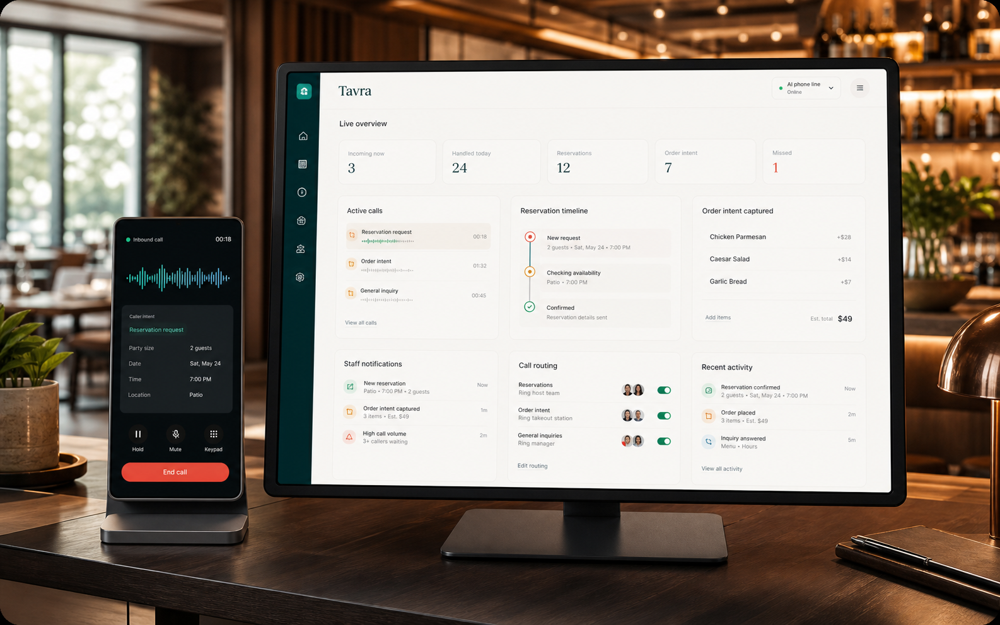

Answers the line
Greets callers, understands common restaurant requests, and keeps the conversation moving without staff picking up every ring.
Restaurant phone operations
Tavra answers calls, captures reservations, handles order intent, and keeps service moving when your team is slammed.

Product
Tavra helps restaurants capture phone-based demand and keep staff focused during service. The system listens for intent, asks the right follow-ups, and routes the conversation when a human should step in.
Greets callers, understands common restaurant requests, and keeps the conversation moving without staff picking up every ring.
Captures party size, dates, times, names, order intent, notes, and caller context in a structured way.
Escalates edge cases, special requests, and high-value moments so your team can focus where human attention matters.
Reservations
Where configured, Tavra books into the Native Tavra Reservation Book. It confirms the essentials, records notes, and gives owners and staff visibility into what came through the phone.
Orders
Tavra can identify order demand, gather the useful context, and route callers according to your operating setup. Staff get a clearer read on what the phone is trying to tell them.
Caller wants takeout for pickup.
Order notes, timing, and caller details are organized.
Route, notify, or hand off based on restaurant rules.
Integrations
Tavra is designed to connect with restaurant systems through approved partner integrations. External reservation and ordering integrations are planned, but this site does not claim any third-party integration is currently live.
Supports the systems restaurants already rely on.
Partner-friendly by design, with approved connection paths as systems come online.
Focused on phone demand, staff notifications, and clean handoffs.
Contact
For restaurant operators, groups, and partners evaluating Tavra for phone operations.